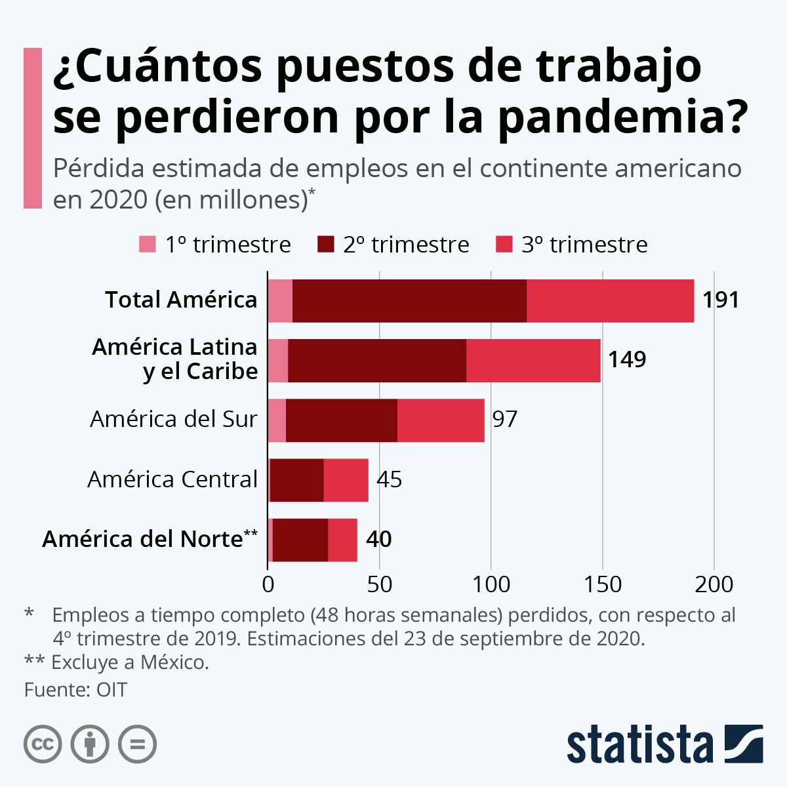
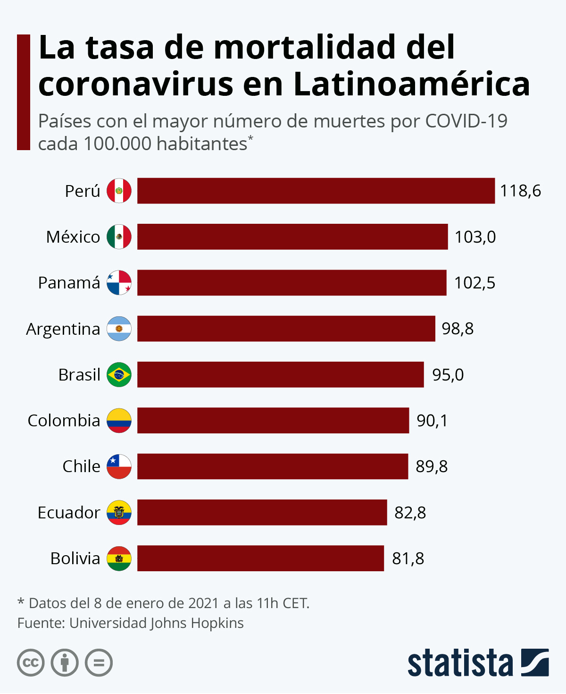
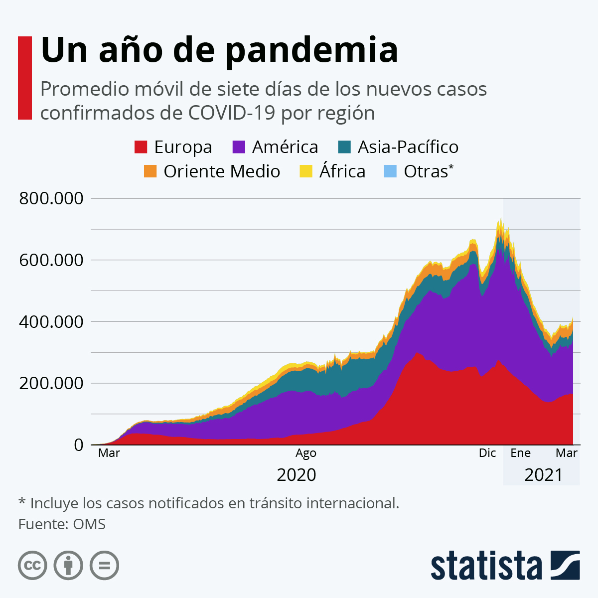

Peste negra
La humanidad vivió el peor brote de esta enfermedad a mediados del siglo XIV (entre 1346 y 1353). Sin embargo se ignoraba por completo tanto sus causas como su tratamiento. Esto, junto con la gran velocidad de propagación, la convirtió en una de las mayores pandemias de la historia. Hasta cinco siglo más tarde no se descubrió su origen animal, en este caso las ratas, que durante la Edad Media convivían en las grandes ciudades con las personas e incluso se desplazaban en los mismos transportes –barcos, por ejemplo- hacia ciudades lejanas, portando las bacterias de Yersinia Pestis, causante de la peste negra, consigo. Los números que dejó tras de sí esta epidemia son estremecedores. Por ejemplo, según los datos que manejan los historiadores, la península Ibérica habría perdido entre el 60 y 65% de la población, y en la región italiana de la Toscana entre el 50 y el 60%. La población europea pasó de 80 a 30 millones de personas.
Viruela
El virus variola es el causante de la enfermedad conocida como viruela. Su nombre hace referencia a las pústulas que aparecían en la piel de quien la sufría. Era una enfermedad grave y extremadamente contagiosa que diezmó la población mundial desde su aparición, llegando a tener tasas de mortalidad de hasta el 30%. Se expandió masivamente en el nuevo mundo cuando los conquistadores empezaron a cruzar el océano afectando de manera terrible una población con defensas muy bajas frente a nuevas enfermedades, y en Europa tuvo un periodo de expansión dramático durante el siglo XVIII, infectando y desfigurando a millones de personas. Afortunadamente, es una de las dos únicas enfermedades que el ser humano ha conseguido erradicar mediante la vacunación. En 1977 se registró el último caso de contagio del virus, que desde entonces se considera extinguido.
Gripe española
En marzo de 1918, se registró el primer caso de gripe española, en un hospital de Estados Unidos. Fue bautizada así porque España se mantuvo neutral en la Gran Guerra y la información sobre la pandemia circulaba con libertad, a diferencia de los demás países implicados en la contienda que trataban de ocultar los datos. Esta virulenta cepa del virus de la gripe se extendió por todo el mundo al mismo tiempo que las tropas se repartían por los frentes europeos. Los sistemas de salud se vieron desbordados y las funerarias no daban abasto. Estudios recientes han revelado datos más precisos. Se estima que la tasa global de mortalidad fue de entre el 10 y el 20 por ciento de los infectados, llegando a morir, en todo el mundo, entre 20 o 50 millones de personas.
Algunos datos sobre el COVID-19
Estadísticas sobre el desempleo durante el COVID-19
Suposiciones de pérdidas de empleo
Estadísticas de muertes del COVID-19
Estadísticas de casos de COVID-19
